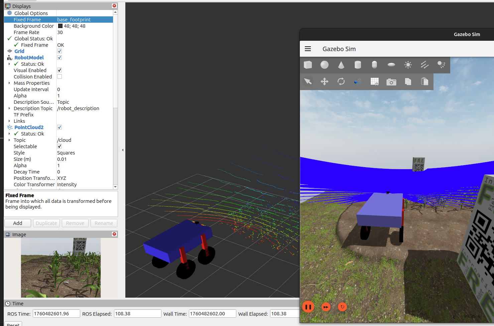

Open Source · MA64 Robotics Community
Robotique agricole
autonome &
collaborative
Faucon est une plateforme open source qui met en collaboration un robot mobile et un drone pour accomplir des missions agricoles autonomes et une opportunité pour chaque passionné de robotique de s'impliquer sur un cas réel.

Simulation active
ROS2 Jazzy · Gazebo Sim